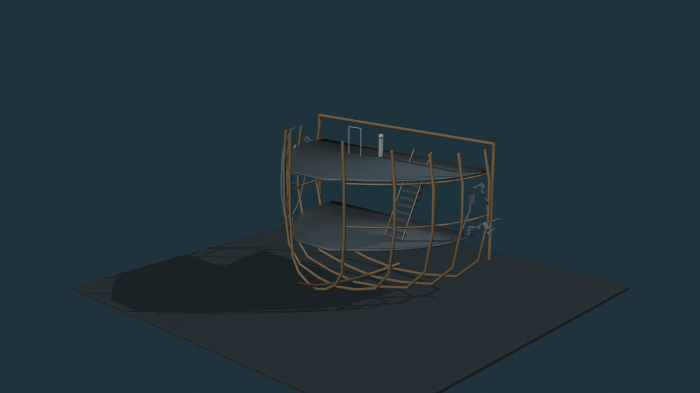
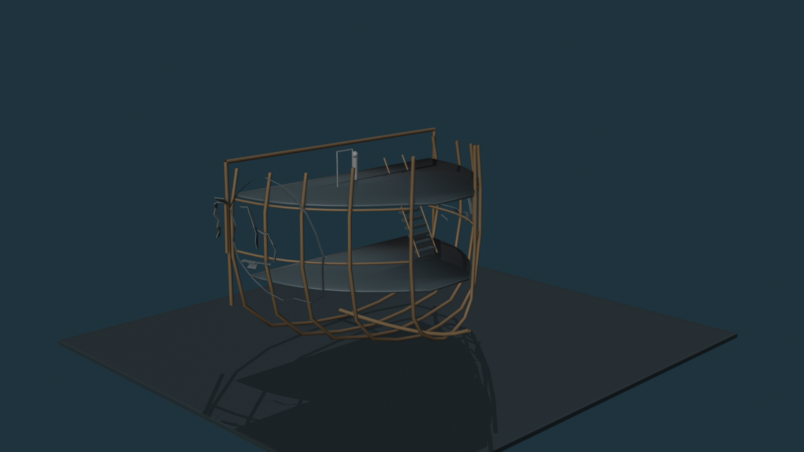
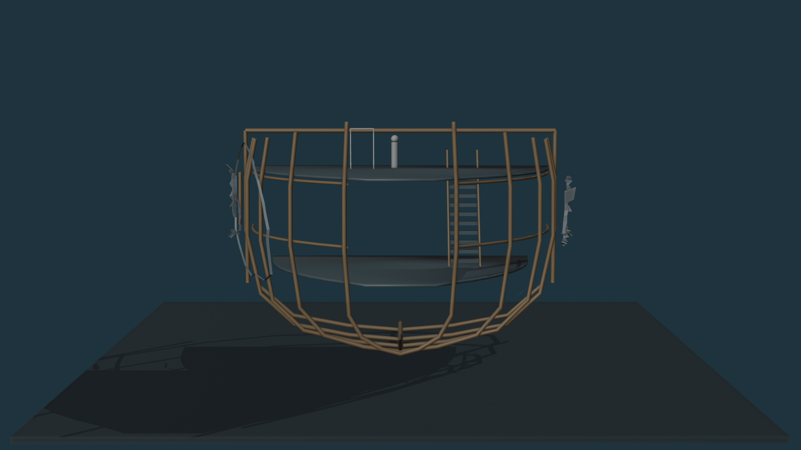
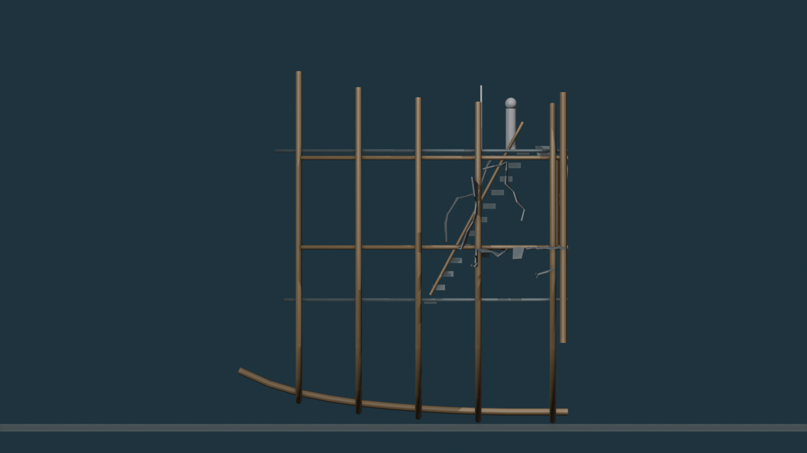
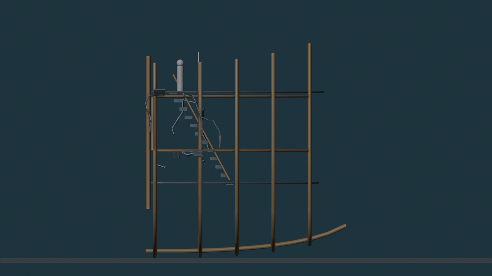
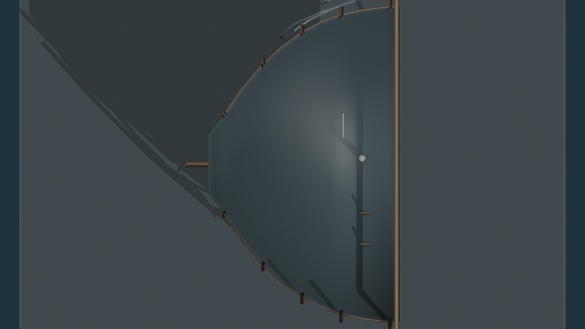
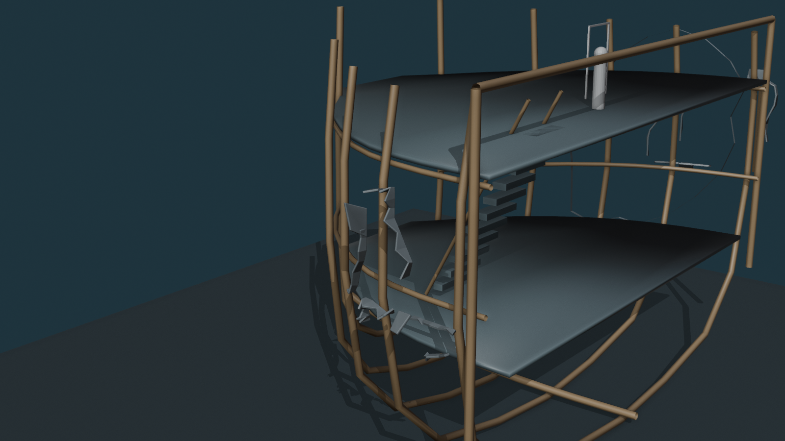
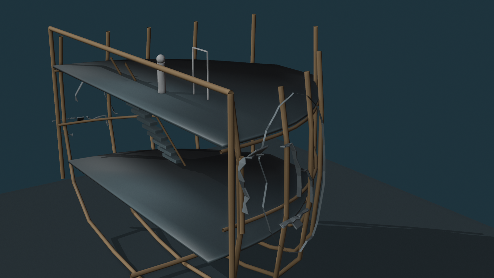

Implemented exactly from Damage Map V01
P1 major port loss, P2 lower/aft port tear, S1 major starboard loss, S2 forward starboard tear; mapped stem/keel/A-B connection regions remain protected; mapped peel directions were translated into partial lips/flaps; no Meshy was used in this trial.
Whole Bow






Mapped Damage Closeups


Current Gate
Judge only whether the 2D damage map translates correctly into the 3D hull. If this topology works, the next pass can add small secondary Meshy debris/fragments without changing these loss fields.